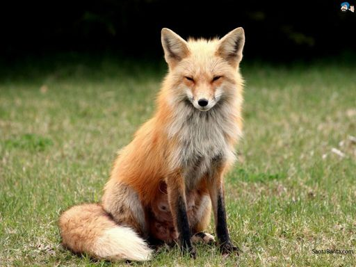

-
ძაღლი
- ძაღლი არის ერთ-ერთი ყველაზე მეგობრული და დამჯერე ცხოველი,
- გავრცელებული არიან ყველგან გარდა ანტარქტიდისა, ახალი ზელანდიისა, მადაგასკარისა, სულავესისა და სხვა ოკეანური კუნძულისა.
-
კატა
- კატა არის ასევე მეგობრული.
- გავრცელებული არიან მთელ მსოფლიოში, ავსტრალიისა და მადაგასკარის გარდა.
-
მელა
- 
- მელა არის მტაცებელი ძუძუმწოვრების გვარის ძაღლისებრთა ოჯახიდან..
- გავრცელებულია ყველგან, ანტარქტიდის გარდა.
Document